mattcolewilson
small updates, cat pics, cool shit
Now ↓
2024.02.19 - WednesdayIt's already mid-February, huh. Moving right along. Not a lot to report. I have been working on some music and am excited about that. Some beep-boop type stuff. Also watching The Sopranos for the first time and it rocks. Hope you're doing alright! Thanks for stopping by.
🎮 Prodeus
🎧 Year of the Snitch – Death Grips
📺 The Sopranos
Posts ↓
2025.03.05 – Wednesday
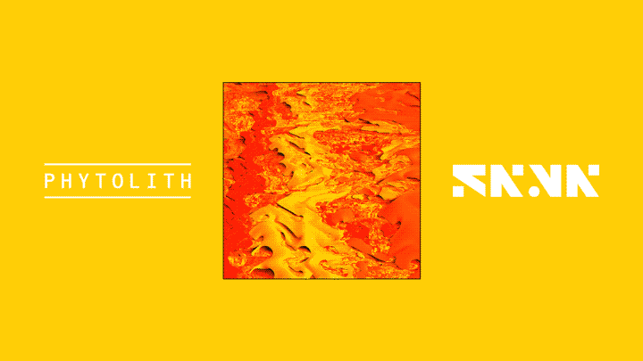
Hello again. I just released some new music under the name SNVN. This EP is called PHYTOLITH. It's short and pretty fun, imo. Check it out on Bandcamp!
2025.03.01 – Saturday
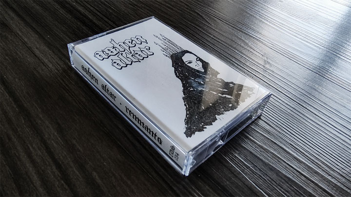
I am very late in doing this, but I wanted to publicly say: huge thanks to Einar Baldvin for letting me use his artwork for this music project. And huge thanks to Realm and Ritual for making it physical. And last but not least, huge thanks to those of you who bought tapes or made digital purchases. All of this has been a complete surprise and an absolute thrill. <3
2025.02.19 – Wednesday
It is 2° right now. Winter is horrible!! I can't take it... Someday we will move somewhere warm.
2025.01.25 – Saturday
They got alcoholic Arizona Iced Tea. Just thought you should know.
2024.12.29 - Saturday
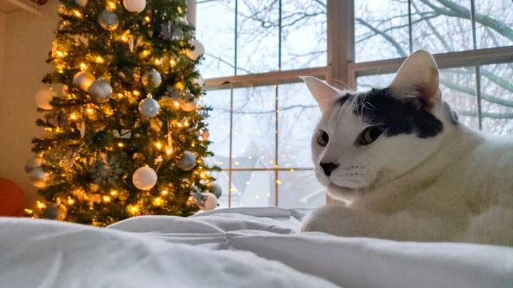
I've been kinda offline lately. Enjoying the holidays. A little late, but merry Christmas, and all that. Also, check out this great photo of Arcade I took a few days ago.
2024.11.23 - Saturday
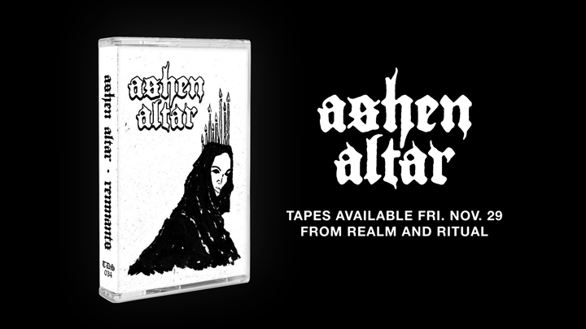
Dropping my first dungeon synth project! Tapes will be available this Friday from the Realm and Ritual Demo Series. But in the meantime, you can listen here.
2024.11.08 – Friday
Obligatory post-election update. Not much nice to say. It sucks that this country is so dumb and angry. Gonna try to focus on the things I can control, I guess. Hope you're doing ok.
2024.10.27 - Sunday
I've been using Record Club and it's pretty neat. (It's kind of like GoodReads, but for music.) I now have three invites, so if you wanna try it out, shoot me an email!
2024.10.18 - Friday
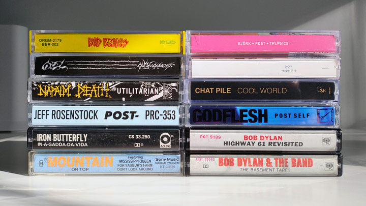
Check out my little cassette tape collection! Recent acquisitions – from Love Garden Sounds in Lawrence – include Vespertine by Björk, the Bad Brains self-titled debut, and Jeff Rosenstock's Post. (I kinda regret getting Post instead of Hellmode. So it goes.)
2024.10.17 - Thursday
Kinda want to make a plain text website and/or start using bearblog to write more. But I will probably end up just playing Elden Ring instead of doing either of these things.
2024.10.15 - Tuesday
Andrew Elmore dropped a new album earlier this month. Almost snuck by me, just finding out now. It's great. PSP beats! Do it!
2024.10.14 - Monday
I'm (what feels like) half way through the Shadow of the Erdtree DLC and it fuckin' rocks. Also listening to Bonfireside Chat as I go and it's such a wonderful way to experience a game. Highly recommended.
2024.10.14 - Monday
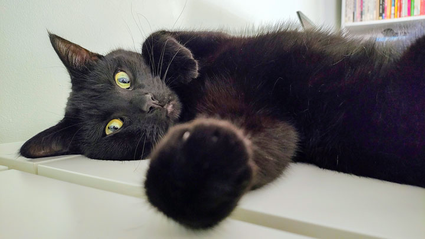
Had a nice three-day weekend and am feeling refreshed. Went to a pumpkin patch with some friends and then took a day trip to Lawrence, KS. Poked around downtown, visited the art museum, etc. Had a good time, but nothing feels better than coming home.
2024.10.07 - Monday
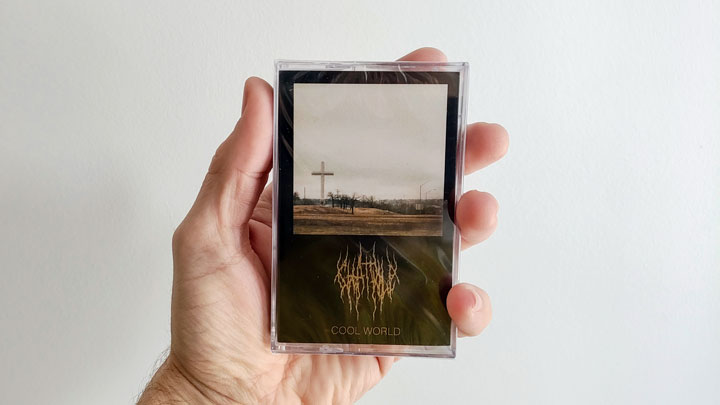
Got the new Chat Pile cassette and am listening to it for the first time while posting this update. So far, it's great. Haven't gotten into many new bands in a while, but I'm really liking these guys.
2024.10.04 - Friday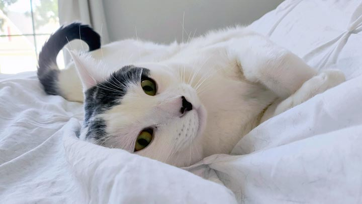
Anyway, look at my cute cat.
2024.10.04 - Friday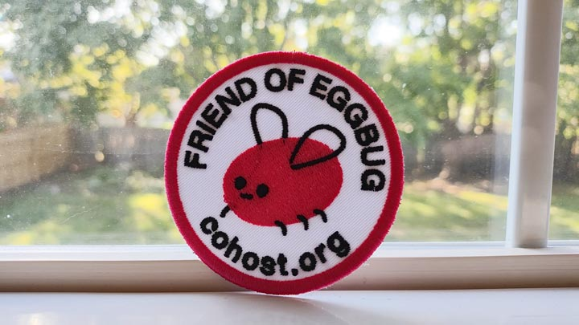
RIP Cohost.org. I had a nice time. I'm also trying to avoid over inflating that website's importance. But it shutting down feels like the end of something. A last gasp. Social media is essentially over, as far as I'm concerned. Personal sites, forums, and RSS feeds are the future. And that's not a bad way to go, I guess.
2024.09.30 - MondayPuzzle update: we (finally) finished and all the pieces were present! I take back the disparaging comments I made earlier about our cats. They're good boys, afterall.
2024.09.27 - FridayListened to sad music all morning and have bummed myself out. (This is a rake I will continue to step on.) Anyway, I've said this before, but If I Didn't Have Your Love by Leonard Cohen is one of the best love songs ever written.
2024.09.26 - ThursdayPushed a small update to the Links page. There's now (the start of) an 88x31 button wall. Check it out and visit some cool websites.
2024.09.23 - Monday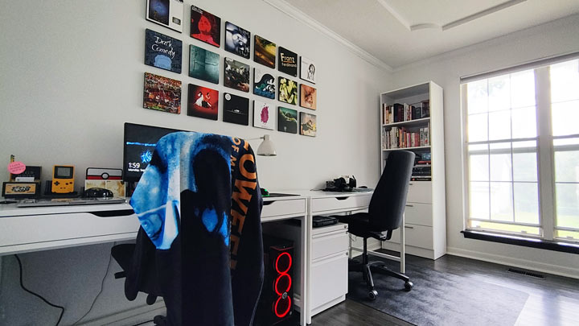
Where the magic happens. (I strongly recommend grabbing a photo of the places you spend your time. It's nice to have something to look back on if things change.)
2024.09.22 - SundayI am now prepared for the Cohost shutdown. Got a solid setup going here. Finished making a list of the people I want to keep an eye on. And I’m becoming a total RSS sicko. See you on the other side.
2024.09.21 - SaturdaySeeing those giant skeletons around town. The greatest innovation in Halloween decor that's happened in my lifetime, by far.
2024.09.19 - Thursday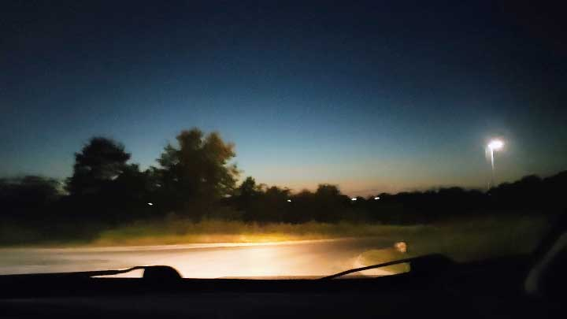
Took this photo a couple nights ago. Feels like something I would've taken with my shitty phone in like 2008 (non-derogatory).
2024.09.19 - Thursday
Puzzle progress report: The cats finally fucked with the puzzle. Found some pieces down the hall and one in the linen closet. It was bound to happen, I guess. This whole thing will probably end in frustration. So it goes.
2024.09.18 - Wednesday
We’ve been going to the gym lately, which has been great overall. (Who would have thought?) But the big thing they don’t tell you is how much time it takes. Work a full-time job and then also go to another place and exercise for like an hour? A total day melter.
2024.09.16 - Monday
Finally figured out the basics of setting up an RSS feed. Sharing my notes, in case it can be of help to anyone else. This also goes over the basics of rosting (RSS direct posting). Check it out.
2024.09.16 - Monday
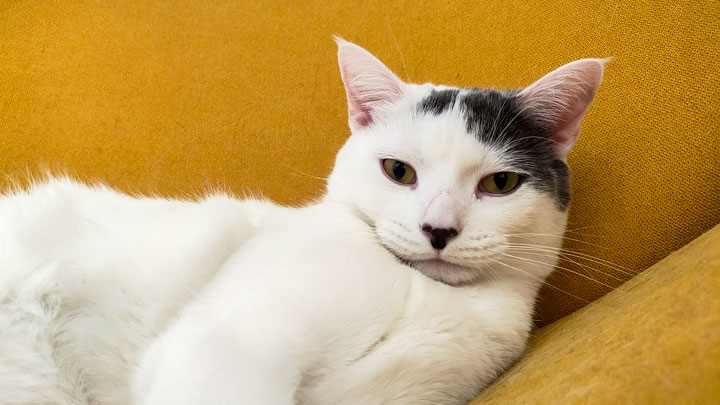
I will 100% post exclusive cat pics here. This is an old one that I had on hand to test things out. So, uh, stay tuned.
2024.09.15 - Sunday
Maybe TMI but I got a vasectomy earlier this month and I highly recommend it. Not a big deal and it guarantees a bright, childless future. Posting this because if I had known how easy it was earlier, I probably would have done it years ago.
2024.09.15 - Sunday
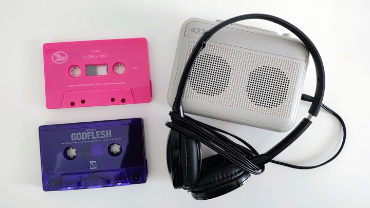
I'm into cassette tapes again. The last time I regularly used a cassette player was probably in middle school. Having a very nice time with this lil guy from Turntable Labs. Blessed to not be an audiophile.
2024.09.14 - Saturday
When all the good places to post go away, you have to create your own. This is a total ripoff (with permission) of whack.zone. I plan on posting little updates and occasional thoughts here. You can follow along via the Atom feed, if you'd like.
You've reached the end. Back to top.